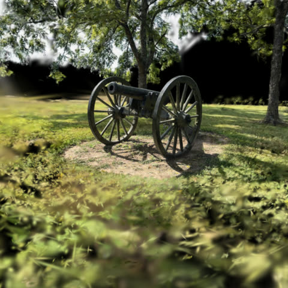

Provenance: At the Research Library

Catalog record
Source: working-tree scenes.json; repository base identified below. These are catalog claims.
Scene: research-library
Place: Wilson's Creek National Battlefield, Missouri
Captured: 2026-08-30
Description: The wooded grounds by the Hulston Civil War Research Library — tree line, lawn, and the light coming through.
Catalog splats: 631,726
Capture and export
Operator source summary: Scaniverse splat scan; original export format unrecorded in the commit message.
The summary is supplied with --source and attributed to the quoted history below; it is not a measurement from raw capture files.
Recorded cleaning
Excerpts from the source commit messages:
750k splats cropped to the tree line and lawn.
Evidence limits
The source message records the crop and rounded input count, but no numeric cleaning flags or device model. LANE-B4-BRIEF.md identifies the input as a 3DGS PLY export cleaned with tools/clean_export.py; the raw input is unavailable. Cleaner defaults have not been substituted for run parameters.
Delivered files
scenes/research-library.sog: SOG, 8,316,921 bytes (8.317 MB); sha256f52f5bb1c4a29f31f8b7e80720b0424a9e75977c537181d703446898884dc381scenes/research-library.spz: SPZ, 10,606,408 bytes (10.606 MB); sha2560ce859481c2b5b5f3235554ebc9fded098b03d0d4cae1491bc224de3dbdc5a80
Source commit messages
Verbatim repository messages; historical claims may describe earlier versions of a scene.
Source commit: fcad9cedbf90721f85015a33c38d0842146c2fd4
The library grounds join the gallery
A fresh Scaniverse splat scan from the trip - the wooded grounds by the
Hulston Civil War Research Library, 750k splats cropped to the tree
line and lawn.
Co-Authored-By: Claude Fable 5 <noreply@anthropic.com>
Processing
- Repository HEAD: acfd4a028f34f6cd6c38870072b1391eb01ce6ef.
- Sheet generated from the current working-tree catalog and delivered files; HEAD identifies the repository base, not an assertion that this sheet is committed.
- Generated: 2026-09-04T19:05:09+00:00.
- License: CC BY 4.0 unless the commissioning agreement states otherwise.